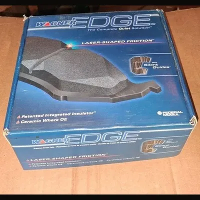
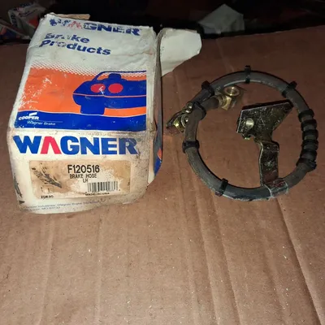

Wheel Nuts, Bolts & Studs
Wagner BD61281 Zinc Lug Nut Lot of 3 Partial 1/2-20 81-89 Concord Fifth Ave NOS
BD61281
Fits 1981-1983 AMC Concord · 1983-1989 Chrysler Fifth Avenue (50 listed)
$15.99
View details25 parts from Wagner, mostly brakes & suspension and ignition & tune-up. Each listing shows the part number, condition and photos. Check fitment on the part page before you order.
25 parts
Online checkout through Square. Ships from Carbondale, PA, or pick up by confirmed appointment only. Fitment question? Message us.
BD61281
Fits 1981-1983 AMC Concord · 1983-1989 Chrysler Fifth Avenue (50 listed)
$15.99
View details
BD61283
Fits 1985-1989 Buick Century · 1981-1989 Buick Electra (316 listed)
$16.99
View details
BD61288
Fits 1991-1994 Buick Commercial Chassis · 1991-1994 Buick LeSabre (15 listed)
$18.99
View details
BD61288
Fits 1991-1994 Buick LeSabre · 1991-1994 Buick Commercial Chassis (15 listed)
$29.99
View details
BD61301
Fits 1985-1988 Chevrolet Nova · 1990-1991 Chevrolet V1500 Suburban (49 listed)
$29.99
View details
BD61302
Fits 1982-1994 Buick Century · 1988-1994 Buick LeSabre (322 listed)
$15.99
View details
BD61355
Fits 1984-1988 Nissan 200SX · 1991-1994 INFINITI G20 (46 listed)
$29.99
View details
BD61988
Fits 1994-1998 Audi Cabriolet · 1990-1991 Audi Coupe Quattro (7 listed)
$39.99
View details
BD61992
Fits 1995-1996 Ford Escort · 1995 Mazda MX-3 (7 listed)
$24.99
View details
CR98670
Fits 1978-1996 Cadillac Fleetwood · 1978-1979 Cadillac Seville (390 listed)
$34.99
View details
EC707
Fits 1997-2001 Toyota Camry · 1997-2001 Lexus ES300 (78 listed)
$89.99
View details
F106342
Fits 1978-1981 Buick Century · 1978-1987 Buick Regal (1561 listed)
$14.99
View details
F106886
Fits 1979-1981 Buick Century · 1979-1987 Buick Regal (1247 listed)
$14.99
View details
F109059
Fits 1980-1991 Ford E-250 Econoline · 1980-1991 Ford E-250 Econoline Club Wagon (1303 listed)
$16.99
View details
F109093
Fits 1984-1991 Chevrolet S10 · 1984-1991 Chevrolet S10 Blazer (473 listed)
$15.99
View details
F109138
Fits 1983-1984 GMC C6000 · 1983-1984 Chevrolet C50 (34 listed)
$16.99
View details
F110132
Fits 1983-1984 Ford Thunderbird (20 listed)
$10.99
View details
F110260
Fits 1978-1981 Buick Century · 1978-1987 Buick Regal (1974 listed)
$14.99
View details
F110420
Fits 1982-1994 Buick Century · 1984-1990 Chevrolet Celebrity (651 listed)
$14.99
View details
F112409
Fits 1987-1994 Ford Ranger · 1986-1989 Ford Aerostar (295 listed)
$14.99
View details
F120516
Fits 1988-1990 Chrysler Dynasty · 1990 Chrysler Imperial (31 listed)
$14.99
View details
F120536
Fits 1989-1990 Ford Bronco II · 1989-1990 Ford Ranger (53 listed)
$21.52
View details
F120889
Fits 1986-1991 Ford Ranger (220 listed)
$19.99
View details
MC101254
Fits 1975-1978 AMC Matador · 1971-1973 Buick Centurion (3000 listed)
$99.99
View details
ZX603A
Fits 2005-2006 Chrysler Crossfire · 1992-1993 Mercedes-Benz 300SD (91 listed)
$34.99
View details